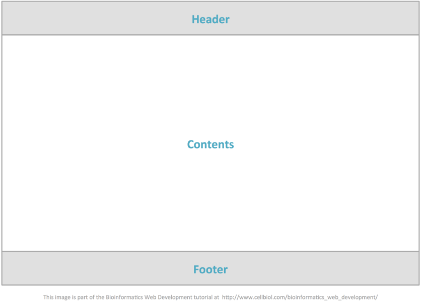

TEMPLATE PADRÃO DA APLICAÇÃO
Layout padrão da aplicação que será utilizado em todas as páginas com a definição de identidade visual, aspectos de responsividade, tipografia e iconografia.
LAYOUT DA APLICAÇÃO
Visando determinar e padronizar a disposição dos vários elementos e seções da aplicação, o layout será conforme demonstrado a seguir.
- HEADER (Cabeçalho): logo + slogan, menu de navegação, login do usuário.
- CONTENTS (Parte do Conteúdo): desenvolvido de acordo com sua especificidade.
- FOOTER (Rodapé): copyright, nome da aplicação.
Figura 28

CORES DA APLICAÇÃO
Cores da Logo
#13ADC2
#9113C2
Cores Principais
Cores Secundárias
Cores Neutras
#FFFFFF
#F1ECE9
SIGNIFICADO DAS CORES
AZUL
Bastante utilizada em conteúdos corporativos por transmitir credibilidade, segundo Assis (2019), também pode ser considerada uma opção conservadora. Por ser uma cor classificada como fria, pode trazer sensações de frescor. Para Significados.com.br (2022), a cor azul está relacionada com a nobreza e costuma ser usada para transmitir harmonia, tranquilidade e serenidade.
ROXO
Representa a nobreza, sucesso, abundância, dignidade e imaginação. É muito calmante e muitas vezes está relacionado à intuição e à espiritualidade. Estimula a área do cérebro de resolução de problemas e de criatividade (FIGUEIRÊDO, 2016).
VERDE
O verde é a cor mais associada à natureza e ao sentimento de esperança, segundo Significados.com.br (2022). As principais sensações ativadas pelo verde são, refrescância, tranquilidade, renovação, saúde e naturalidade. Costuma transmitir equilíbrio em um momento de decisão (ASSIS, 2019).
MARROM
Considerada a cor da terra, o marrom expressa segurança, maturidade, conforto e simplicidade. Além disso, está relacionada a produtos naturais e ao estilo de vida saudável (Significados.com.br, 2022).
BRANCO
Representa a paz, a purificação, a inocência e a clareza. Também é reconhecida como uma cor que transmite calma e ajuda a atingir o equilíbrio (Significados.com.br, 2022).
PRETO
A cor preta é o resultado da absorção de todas as radiações do espectro solar. Esta cor é considerada uma cor sofisticada e elegante (Significados.com.br, 2022).
TIPOGRAFIA
FONTES
Open-Sans (Texto) - Link
Montserrat (Títulos e Textos dos Botões) - Link
Style Regular / Bold
FONT SIZE
font-size: 8px
font-size: 16px
font-size: 24px
font-size: 48px
FONT SIZE RESPONSIVE
font-size: xx-small
font-size: x-small
font-size: small
font-size: medium
font-size: large
font-size: x-large
font-size: xx-large
ICONOGRAFIA
- Padronizados através do pacote de ícones de interface, baseados em vetores no formato SVG;
- Style Regular;
- Cor Principal: #13ADC2.
- Fonte: https://fonts.google.com/icons
ICONOGRAFIA GERAL
Referência
<link href="https://fonts.googleapis.com/css2?family=Material+Symbols+Outlined" rel="stylesheet">
Exemplo
<span class="material-symbols-outlined">search</span>
Buscar
househouse
translatetranslate
stadia_controllerstadia_controller
workspaces_outlineworkspaces_outline